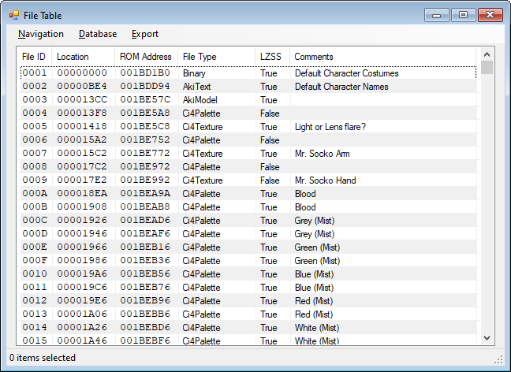
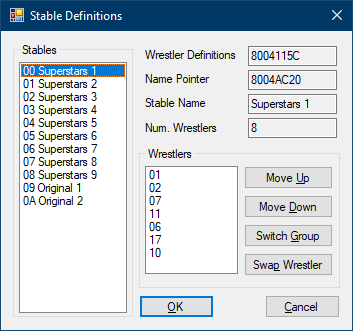
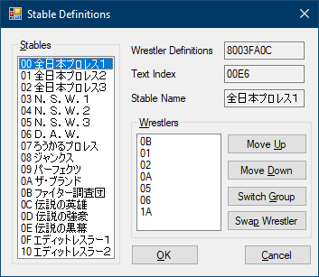

Version 0.0.0.12 (? ??, 2018)
Program and Manual by freem
http://vpw.ajworld.net/
VPW Studio is a ROM hacking tool for the games in AKI Corporation's Virtual Pro-Wrestling series.
As of 2018, the primary accepted solution for making changes to the AKI wrestling games are GameShark codes and emulator-only plugin-based texture replacements. Anyone who wanted to play projects using these methods on console could not fully do so.
The primary inspiration for VPW Studio is the Goldeneye Setup Editor, which works directly on game data. This allows hacks to work on console, assuming you follow all of the internal "rules" of the game and the N64's supported data formats.
Currently, only the AKI wrestling games on the Nintendo 64 are supported:
| Game Name | Supported Releases |
|---|---|
| WCW vs. nWo World Tour | NTSC-U v1.0, NTSC-U v1.1, PAL |
| バーチャル・プロレス64 (Virtual Pro-Wrestling 64) |
NTSC-J |
| WCW/nWo Revenge | NTSC-U, PAL |
| WWF WrestleMania 2000 (WWFレッスルマニア2000) |
NTSC-U, NTSC-J, PAL |
| バーチャル・プロレス2 〜王道継承〜 (Virtual Pro-Wrestling 2) |
NTSC-J |
| WWF No Mercy | NTSC-U v1.0, NTSC-U v1.1, PAL v1.0, PAL v1.1 |
Note that not every game supports every portion of VPW Studio. Supported games are listed in the specific sections for each tool.
Of the remaining AKI wrestling games, it's more likely the PlayStation 1 games (Virtual Pro-Wrestling and WCW vs. the World) will be supported before games on later systems.
(todo)

The main form appears when you boot VPW Studio.
(todo)
VPW Studio has a small set of options, primarily targeted towards the building and playing process. Select Tools → Program Options to open the dialog.
The "Emulator" section of the Program Options dialog allows you to set up an emulator to use for testing the changed ROM.
The "Build" portion of the Program Options dialog currently only contains an option to modify the verbosity of the build log. The default option is "Normal".
If you have an older computer, setting the Build Log Verbosity to "Minimal" can shorten build times.
VPW Studio primarily operates on the concept of Project Files. This method was chosen due to the number of total conversion hacks created by the AKI hacking communities.
Project Files have the extension .vpwsproj. Technical information
about the Project File format can be found in Appendix B5.
Aside from the Project File itself, the project expects a specific structure. Upon saving a project for the first time, two directories will be made in the location the project was saved:
VPW Studio expects these folders to exist for any saved project. You can change their locations via the Project Properties dialog.
Getting started with the main portion of the program requires creating a new project. Select "New Project..." from the File menu, which will bring up the New Project dialog.

The options presented are:
All of these may be changed later in the Project Properties dialog. Upon pressing OK, you will be sent back to the main screen, with the main form updating to reflect the new project.
To open a VPW Studio Project File, choose "Open Project..." from the File menu. After selecting a project file, the program interface will update to reflect what game is being edited.
When you want to save changes to a project, there are two options: "Save Project", and "Save Project As". Both are available from the File menu.
The first time you save a new project, the program will ask you for a location and name to save the file. Upon doing so, two directories will be created in the directory where the project file is saved: "Assets" and "ProjectFiles". "Assets" is meant for unconverted items (such as .png images), while "ProjectFiles" will store any files that are in game-native formats.
"Save Project As" is similar to saving normally, but it always asks for a filename and doesn't automatically create the "Assets" and "ProjectFiles" directories.
If you need to edit any of the project's properties, you can do so from Project → Project Properties. While some of these options are set from creating a new project, others can only be changed in this dialog.

The options in this section are the same as the matching entries in the New Project dialog.


To build a ROM with the changes you've made, select "Build ROM" from the "Project" menu (Keyboard shortcut: Shift+Ctrl+B). This will bring up a build log window, which provides updates on the build process.
Depending on the speed of your computer, the number of FileTable entries being modified, and the Build Log Verbosity setting, this process may be relatively short (~10 seconds) or long.
If you want to test the changes in an emulator, select "Play ROM" from the "Project" menu (Keyboard shortcut: F5). If the changed ROM hasn't been built yet, it will build the ROM before playing it.
For this to work, you must set up the emulator details in the Program Options section.
(todo: this portion of the program requires a 3D renderer, and I am not yet smart enough to do that -f)
The Championships editor differs for each game:
(todo)
| Game | Support |
|---|---|
| WCW vs. nWo World Tour | No |
| Virtual Pro-Wrestling 64 | No |
| WCW/nWo Revenge | Partial |
| WWF WrestleMania 2000 | No |
| Virtual Pro-Wrestling 2 | No |
| WWF No Mercy | No |
The costume viewer allows you to view the values used for each costume in the game.
(todo)
The File Table editor, accessed from Project → File Table, allows you to view and edit the entries in the game's File Table. A large portion of the game's data is found in the File Table, including wrestler movesets, parameters, move data, textures, palettes, models, and more.
| Game | Read | Write |
|---|---|---|
| WCW vs. nWo World Tour | Yes | Partial* |
| Virtual Pro-Wrestling 64 | Yes | Yes |
| WCW/nWo Revenge | Yes | Yes |
| WWF WrestleMania 2000 | Yes | Yes |
| Virtual Pro-Wrestling 2 | Yes | Yes |
| WWF No Mercy | Yes | Yes |
* Only supports WCW vs. nWo World Tour NTSC-U v1.1.
(todo)
The Navigation menu contains various functions to help you find entries in the FileTable.
The "Go To" option (keyboard shortcut Ctrl+G) allows you to jump to a specific file number. The value is in hexadecimal, so be aware of that.
You can search for a file based off of its comment text using the Search function (keyboard shortcut Ctrl+F). Once a search has begun, you can use "Find Next" (keyboard shortcut F3) to search for the next comment. Holding Shift while pressing F3 moves backwards.
Note: Currently, the search can not be told to skip over item numbers.
The Database menu only contains one option, but it's important if you've upgraded to a new version of VPW Studio. "Reload File Table Database" will let you update your project's FileTable with the current data in the FileTableDB file for the current game.
The Menus option (Project → Menus) allows you to change how the items are laid out on various game menus.
(todo: haven't even designed this because I don't have the data mapped)
The Moves section (Project → Moves) deals with every move and animation found in the game.
(todo: this takes a lot of work to get right, considering moves are composed of multiple parts (toki1, damage, actual animation data))
The Sound and Music editor (Project → Sound/Music) will eventually allow you to preview and change sounds. (This includes the theme music found in WM2K, VPW2, and No Mercy.)
(todo: I haven't even begun to think about this; you're better off using SubDrag's N64 sound/music tools right now)
The Stable Editor (Project → Stables) allows you to change the default stable data.
(todo)
| Game | Support |
|---|---|
| WCW vs. nWo World Tour | No |
| Virtual Pro-Wrestling 64 | No |
| WCW/nWo Revenge | Partial |
| WWF WrestleMania 2000 | Partial |
| Virtual Pro-Wrestling 2 | Yes |
| WWF No Mercy | Yes |
In WCW/nWo Revenge, the wrestler list is defined by pointers to the wrestler data.
Since the data structures in these three games are similar, they're grouped together.
| WWF WrestleMania 2000 | Virtual Pro-Wrestling 2 | WWF No Mercy |
|---|---|---|
|  |  | |
"Project → Story Mode" (todo)
Please disregard the table below, as this is not implemented yet.
| Game | Support |
|---|---|
| WCW vs. nWo World Tour | No* |
| Virtual Pro-Wrestling 64 | No* |
| WCW/nWo Revenge | No* |
| WWF WrestleMania 2000 | Yes |
| Virtual Pro-Wrestling 2 | Yes |
| WWF No Mercy | Yes |
Note: The Story Mode editor for World Tour, VPW64, and Revenge can be found in the Championships section, as the Championships and Story Mode are intertwined in those games.
(todo)
"Project → Weapons" (todo)
The Wrestler Editor (Project → Wrestlers) allows you to view information about wrestlers. (todo)

VPW Studio also provides tools that aren't tied to the concept of Projects. (todo)
(todo)
The Danger Zone is a collection of tools that is not necessarily meant for end users. These tools are typically rough and unfinished, and usually serve as the base for the final, more polished features.
The list of items and what they do, since it's not always obvious:
(filename).lzss.(filename).bin.(todo)
The Virtual Pro-Wrestling series hacking communities use jargon to refer to some items and concepts. These terms can be confusing when first encountered. In addition, certain programs are involved whose name and function are not immediately obvious.
(notes about program file formats)
The LocationFile format is a plain text database defining locations in ROM and RAM to be used by VPW Studio. Each non-comment line consists of a entry in the LocationFile.
Lines starting with the # character are comments, and will be
ignored by the LocationFile loader.
LocationType:Location,Size;Comment
This value is either ROM or RAM.
ROM locations assume the Z64 file format (like the rest of the program).
RAM locations are primarily for use with the GameShark code tool.
The location for this entry, specified in hex. If this is a RAM entry,
it must begin with 80. Do not use 81 if you are
converting a GameShark code to a LocationFile entry; the size is handled
in the next section.
The size of this entry, in decimal. For a normal entry, this is how many bytes to read/write.
When handling a Code Change entry (see below), the Size value represents the number of bytes between the first and second change.
The comment section is typically used to provide a note about the location, but comments starting with special characters have different meanings.
Special characters currently handled:
$ – Data Location: Specific locations
VPW Studio looks for to handle ROM reads/writes.% – Code Change: Locations used for modifying game code.Special location strings are mapped in the program, so you can't make things up and expect VPW Studio to understand them. The current list of handled special location strings:
Data Locations$FILETABLE – Location of the FileTable in ROM.$FIRSTFILE – Location of the first file described by the FileTable in ROM. (Size field does not matter.)$WRESTLERDEFS – Location of Wrestler Definitions.The FileTableDB format is a plain text database mapping File IDs to types and notes.
Lines starting with the # character are comments, and will be
ignored by the FileTableDB loader.
FileID=Type;Notes
The ID file for this entry. Entries are in hex and should have 4 digits. Entries start from 0001, as 0000 is used as a "no file" index.
(This is the challenging part.)
Currently supported values:
Binary – Default file type.AkiAnimation – Animation data.AkiArchive – An archive of files. Zoinkity's Midwaydec
uses "TEXarchive" for this format, but not all archives exclusively
contain TEX files.AkiModel – Model data.AkiTexture – AKI texture wrapper (a.k.a. "TEX")AkiText – AKI text archive.AkiLargeFont – Large font data (24px wide)AkiSmallFont – Small font data (16px wide)AkiFontChars – Font Characters (typically Shift-JIS)MenuBackground – Menu Background (use on first file in sequence only)Ci4Palette – CI4 palette (16 colors * 2 bytes)Ci8Palette – CI8 palette (256 colors * 2 bytes)I4Texture – I4 texture (4BPP)Ci4Texture – CI4 texture (4BPP)Ci8Texture – CI8 texture (8BPP)DoubleTex – WCW/nWo Revenge credits faces (two TEX files, one after another)A note displayed in the FileTable dialog. Unlike the LocationFile format, there are no special tokens to deal with.
(todo)
The Stable Definition file is a text file following a specific pattern. Each game in the series defines Stable data differently, requiring the creation of an intermediate format.
Generally, the format consists of:
WorldTourWhile the stable data is similar to World Tour, the wrestler select screen is laid out differently.
Game Identifiers
VPW64(todo)
Revenge(todo)
WM2K(todo)
VPW2Stable Number@Wrestler ID2 list pointer={wrestlers},Stable Name text index
Example stable definition: 0@8003FA0C={01,02,03,04,05,06,07,00},00E6
NoMercy(todo)
(todo)
(notes about data structures used in the games)